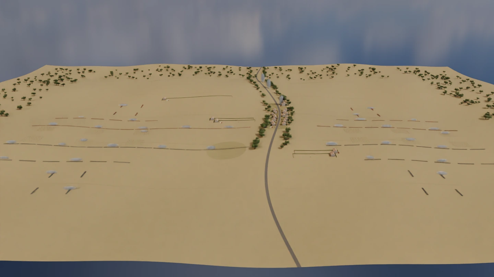
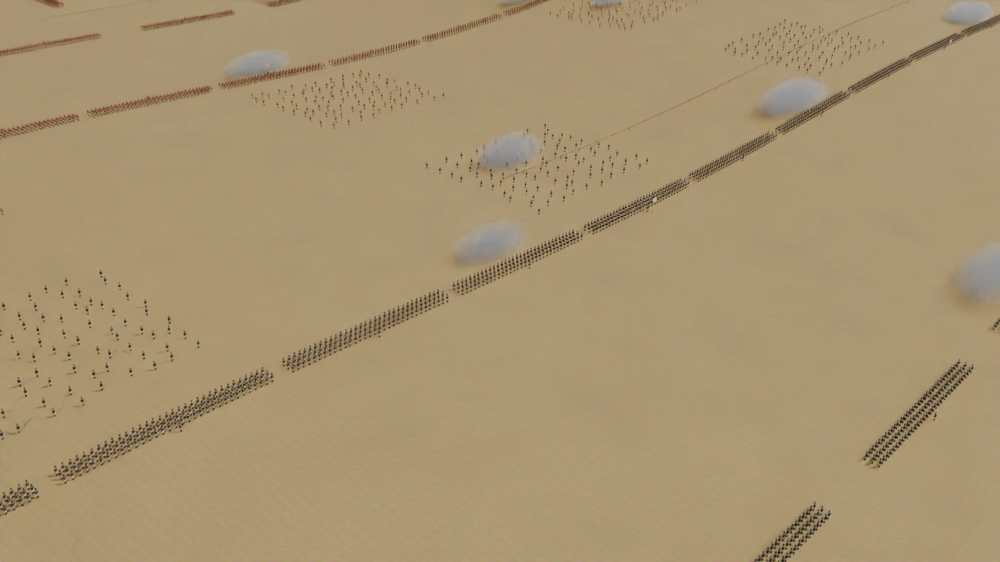
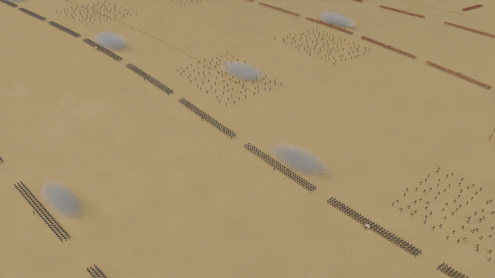

01
01
People
Winged Hussar
Mounted hero study · rider, horse, armor, wings, and arms
Original armor and tack; adapted head, hands, and horseFrom the Winged Hussar and his mount to the village, artillery, field kits, and terrain around them.
A visual index of the distinct model families in the project, with source and adapted work credited on each card.
Featured study · Winged HussarLOD versions, exports, and pieces that belong to the same kit are grouped together. Select a card to open its full size image.
01
Mounted hero study · rider, horse, armor, wings, and arms
Original armor and tack; adapted head, hands, and horse 02
02
Nine mounted riders in a ceremonial formation
Big Sim assembly · Blender source render 03
03
Textured British infantry source model
Andy Woodhead · adapted under CC BY 4.0 04
04
Separate from the early-modern Winged Hussar
Andy Woodhead · adapted under CC BY 4.0 05
05
1815 artillery crew source model
Andy Woodhead · adapted under CC BY 4.0 06
06
Textured source horse model
abhayexe · adapted under CC BY 4.0 07
07
Standalone cuirass, helmet, shoulder plates, wings, and textile layers
Big Sim original armor study 08
08
Face guard, breast protection, bridle, saddle, and cloth
Big Sim original tack study fitted to an attributed horse 09
09
Long kopia lance, pennon, sabre, and sheathed koncerz
Big Sim original weapon study 10
10
Textured Prussian cavalry sidearm source model
Timothy Hsu · adapted under CC BY 4.0 11
11
Field cannon and four-wheel ammunition cart
Big Sim original models 12
12
Close study of the refined cannon master
Big Sim original model 13
13
Source cannon and carriage assembly
perceval-66 · adapted under CC BY 4.0 14
14
Covered battery supply wagon
Big Sim original model 15
15
Wagons, carts, tents, furniture, barrels, and laundry
Big Sim procedural masters; source props retained with attribution 16
16
Gates, walls, gabions, fascines, stakes, well, and trough
Big Sim original procedural kit 17
17
Musket, pistol, sabre, tools, signals, medical, and utility gear
Big Sim original procedural kit 18
18
Twenty-two detailed buildings with street and yard dressing
Big Sim buildings and materials · mixed-source props 19
19
View of the formation from a soldier's height
Big Sim source-scene render 20
20
Aerial panorama of the landscape and battlefield placement
Big Sim source-scene renderThree wide Blender source renders show the opposing lines and village from a whole-field overview and lower flank angles. The source haze volume is hidden for these captures.

A wide view across the opposing lines and village

A lower oblique view along the western line

A matching oblique view from the opposite side
Five mounted Blender source loops sit beside Unity inspection captures of an infantry musket volley and cannon discharge. They show presentation motion, not authoritative combat outcomes.


The model families include the procedural infantry tiers; authored cavalry and horse; Gribeauval and Olive artillery; caissons, carts, and wagons; 22 village buildings; oak and ground cover; and reusable fieldwork, scenery, and player-item kits.
Most cards are Blender source renders. Some base models and village props adapt licensed source work, while the project’s armor, weapons, artillery, terrain, and procedural kits include original Big Sim models. Runtime behavior and performance remain tied to each asset’s Unity review.
The combined Winged Hussar uses adapted head and hand geometry by Andy Woodhead and a horse model by abhayexe. Battlefield portraits also show adapted models by Andy Woodhead, perceval-66, and Timothy Hsu. Village and camp source dressing includes work by Booba Booba, Fri13Day, and Nicholas-3D. The full CC BY 4.0 credits and asset notes are in CREDITS.md.